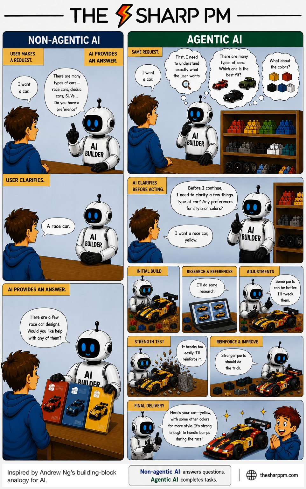

Non-Agentic vs Agentic AI
The difference between non-agentic AI and agentic AI: answering questions vs. autonomously completing tasks.

Inspired by Andrew Ng's building-block analogy for AI.
Experimental project. Everything here — summaries, tags, editorials, illustrations — is generated by AI and published automatically, with no human review before it goes live. It gets things wrong: it misreads sources, recycles the same picks, and states weak conclusions confidently. Use it to find articles worth your time, then read the originals. Do not cite it, and do not treat it as fact. See how it works.
The difference between non-agentic AI and agentic AI: answering questions vs. autonomously completing tasks.

Inspired by Andrew Ng's building-block analogy for AI.